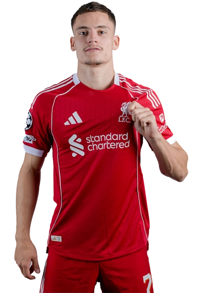
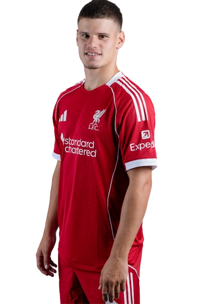
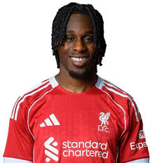
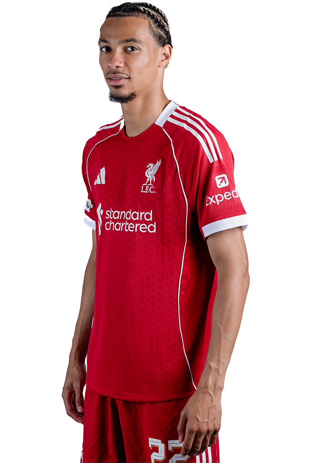

iverpool Football Club, founded in 1892, is one of the most successful and popular football clubs in the
world. Based in Liverpool, England, the team plays its home matches at Anfield Stadium and is nicknamed The
Reds. The club’s anthem, “You’ll Never Walk Alone,” reflects the unity and passion of its supporters.
Liverpool has won numerous trophies, including 19 English league titles, 6 UEFA Champions League trophies,
8 FA Cups, and 3 UEFA Europa Leagues, making it one of the most decorated clubs in Europe. Over the years,
legendary managers like Bill Shankly, Bob Paisley, and Jürgen Klopp have shaped the club’s identity and
success. Famous players such as Steven Gerrard, Kenny Dalglish, and Mohamed Salah have represented the
team with pride. Known for their attacking style, high pressing, and strong team spirit, Liverpool has
fierce rivalries with Manchester United, Everton, and Manchester City. With a rich history, loyal fanbase,
and global recognition, Liverpool FC truly stands as a symbol of passion and perseverance in world
football.
Liverpool Football Club’s 2025–26 season marks their 134th year in existence and 64th consecutive season in England’s top flight. The team, competing in the Premier League, FA Cup, EFL Cup, UEFA Champions League, and FA Community Shield, has shown strong early form with several wins in the league. Their home performances at Anfield remain impressive, while away matches have been mixed. This season brought major changes, including the record-breaking signing of Alexander Isak from Newcastle United for £125 million and the emotional retirement of Diogo Jota’s number 20 shirt following his passing. Young talent Rio Ngumoha made history as Liverpool’s youngest-ever goalscorer at just 16 years old. Under new leadership after Jürgen Klopp’s era, Liverpool continues to rebuild with determination, maintaining their high-intensity playing style and competitive spirit as they aim to challenge for domestic and European titles once again.
click on the photo to know about the player





